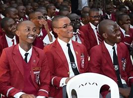

Lenana School is a secondary school in Nairobi, Kenya. It was formed in 1949 by colonial governor Philip Euen Mitchell, known then as the Duke of York School, named after a British World War II King George V-class battleship (1939).
The school was renamed Lenana School in 1969 after the central person in the interaction of the Maasai with invading British imperialists and spiritual leader of the Maasai, Laibon Lenana, around the end of the 19th century through to the early 20th century. The first Kenyan headmaster (principal) of the school was Mr. James Kamunge. The referral to old students of the school changed from the phrase Old Yorkist to Laibons the latter being a title given to religious figures of the Maasai. A picture of Lenana painted by a student artist called Sam Madoka can be seen hanging next to the steps that lead to the 2nd floor of the administration block.
Lenana School currently has 1200 students. In 2006, it was ranked 26th best high school in Kenya based on Kenya Certificate of Secondary Education results. Through the 1980s and into the 21st century, Lenana School has maintained high academic standards ranking in the top 10 and top 20 respectively for many years in the 1980s. The current School Principal is Mr. William Kemei.